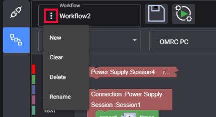

Create and run a Workflow
Workflows are at the heart of RPA, as they define the series of automated steps that software robots follow to perform routine and repetitive tasks.
With the Visual Script Editor providing a visual representation of the workflows, you can add and edit the sessions and parameters of your connections to optimize the automation process.
This chapter provides guidance on:
-
Step-by-Step Guide to Create a Workflow
-
Step-by-Step Guide to Runing a Workflow
-
Step-by-Step Guide to Add, Clear, Delete or Rename a Workflow
Step by step to create a Workflow
1. Click on the Workflow icon to switch to Workflow.
2. Select desired Sessions to be augmented in Visual Script Editor by clicking on the Connection drop-down list.
Selecting Sessions to be augmented in Workflow
Note: You can stitch and augment as many Sessions as needed to create the required Workflow.
3. Visual Script Editor allows you to stitch Sessions, edit and add flow controls. To read more details about Visual Script Editor, see below Visual Script Editor.
4. Click on the Save Workflow button to save the edited Workflow.
Save Workflow button in RPA
5. In the Save Workflow dialog box, enter a name for the Workflow in the Name field to identify the Session. The Description field is optional for you to add some descriptive text.
The Save Workflow dialog box in RPA
6. Click Save to save the Workflow details and the new Wokflow is added.
Step-by-step to run a Workflow
1. Click the Workflow name to see the Workflow drop-down list and select a target Workflow to run.
The Workflow drop-down list in RPA
Note: By default, the last saved Workflow is the active Workflow.
2. Click the Playback button to run the active Workflow.
The Playback button for a workflow
3. Then the active Workflow will play and end automatically. You can also press ESC to cancel Playback actively.
Step-by-step to add, clear, delete or rename a Workflow
You can Add a new Workflow, Clear the content of a Workflow, Delete a Workflow, or Rename a Workflow by clicking the three dots icon.

The three dots icon to edit Workflow in RPA